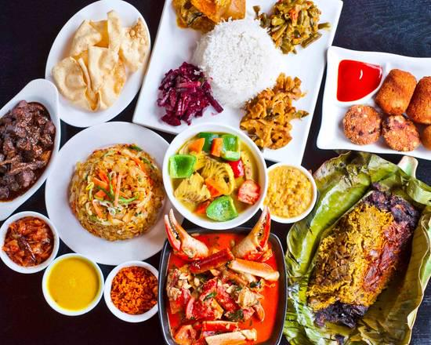

Breakfast
Enjoy a fresh and delicious breakfast served daily from 7:00 AM to 10:30 AM. Choose from a variety of wholesome dishes to kickstart your day. Pre-orders are welcome to ensure a quick and convenient service.
- Milk Rice
- String Hoppers
- Bread
- Dosa
- Rice & Curry
Lunch
Savor a hearty and flavorful lunch served from 12:00 PM to 3:00 PM, featuring a mix of traditional and contemporary dishes. Pre-orders are accepted to guarantee your meal is ready when you arrive.
- Rice & Curry
- Egg Fried Rice
- Chicken Fried Rice
- Beef Fried Rice
- Seafood Fried Rice
- Lamprais Fried Rice

Dinner
Relax and enjoy a delightful dinner served from 6:00 PM to 9:30 PM, offering a selection of exquisite dishes perfect for winding down your day. Pre-orders are available for your convenience.
- Kottu
- Hoppers
- Egg and Plain
- Fried Rice
- Chicken
- Prawn Fried Rice
- Paratha
Drinks
Quench your thirst with a refreshing selection of traditional and fresh beverages. From classic Ceylon tea and aromatic coffee to fresh fruit juices made daily, there's something to suit every taste.
- King Coconut
- Ceylon Tea
- Coffee
- Fresh Juice
- Orange
- Watermelon
- Faluda
- Mango
Desserts
Indulge in our delightful range of desserts, featuring creamy puddings, rich cakes, and traditional Sri Lankan sweets—perfect for a satisfying finish to your meal.
- Ice Cream
- Watalappan
- Pudding
- Brownies
- Cakes
- Cookies